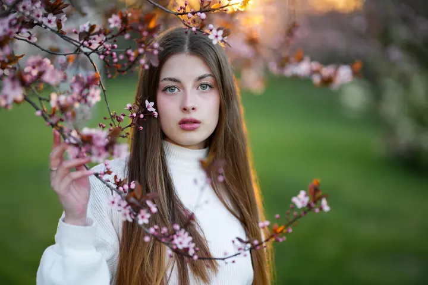
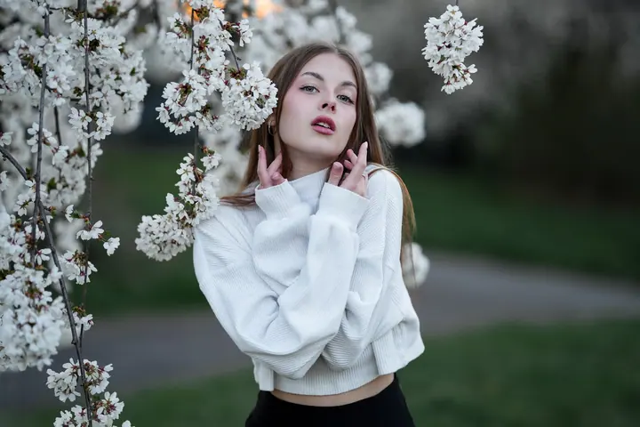

jedna
Portréty
Portréty na pomezí přirozené fotografie a jemného fine art stylu. Nejraději fotím venku a celým focením vás provedu, i když před objektivem stojíte poprvé.

Portrétní fotografka · Praha, Olomouc

Jmenuji se Baruš a fotím v Praze a Olomouci. Pohybuji se na pomezí přirozené fotografie a jemného fine art stylu a nejvíc mě inspiruje focení venku. Celým focením vás provedu, takže se nemusíte bát, ani když před objektivem stojíte poprvé.
Více o mně
Co fotím
jedna
Portréty na pomezí přirozené fotografie a jemného fine art stylu. Nejraději fotím venku a celým focením vás provedu, i když před objektivem stojíte poprvé.
dvě
Každý pár má svou dynamiku a každá rodina svůj vlastní příběh. Fotím je přirozeně, bez strojeného pózování.
tři
Svatební příběhy z celého dne, od příprav až po večer. Zachytím momenty, které jsou přirozené a opravdové.
Reportážní focení akcí, kde se nic nearanžuje a fotky vypráví, jak to opravdu probíhalo.

Každý člověk je jiný a tak ho i fotím.


Za objektivem
Jsem fotografka, grafička a taky inženýrka ekonomie. Vystudovala jsem mezinárodní obchod a marketing, ale nejvíc mě vždycky bavilo mít v ruce foťák. Fotit jsem začala už v sedmi letech, nejdřív hlavně krajinky, detaily a momentky z dovolených.
Postupně jsem zjistila, že mnohem větší radost a zároveň výzvu mi přináší focení lidí. Začala jsem s portréty, pak přibylo párové a rodinné focení, reportáže a nakonec i svatby. Lidi fotím už více než deset let.
Pořád mě na tom nejvíc baví to samé: zachytit momenty, které jsou přirozené a opravdové. Ke každému přistupuji individuálně a přátelsky, a protože při focení vedu, nemusíte se před objektivem ničeho bát.
Barbora
Pošlete mi pár řádků přes kontaktní formulář, o co máte zájem a kdy byste chtěli fotit. Ozvu se vám co nejdřív.
Společně vybereme místo a náladu focení. Nejradši fotím venku, v přírodě nebo v ulicích Prahy a Olomouce.
Při focení vás vedu a radím, jak stát a kam se dívat. Nemusíte mít žádné zkušenosti, stačí přijít v pohodě.
Z focení vyberu ty nejlepší snímky, pečlivě je upravím a pošlu vám je v online galerii.
Portfolio
Fotografie jsou ilustrační
Otázky
Určitě. Klienty při focení vedu, takže se nemusíte bát ani v případě, že před objektivem stojíte poprvé.
Fotím v Praze a v Olomouci. Nejvíc mě baví exteriér, ale rádi se domluvíme i na jiném místě.
Ne. Kromě portrétů fotím i páry, rodiny, svatby a akce.
Záleží na typu a rozsahu focení. Ceny se snažím držet férové, napište mi a pošlu vám konkrétní nabídku.